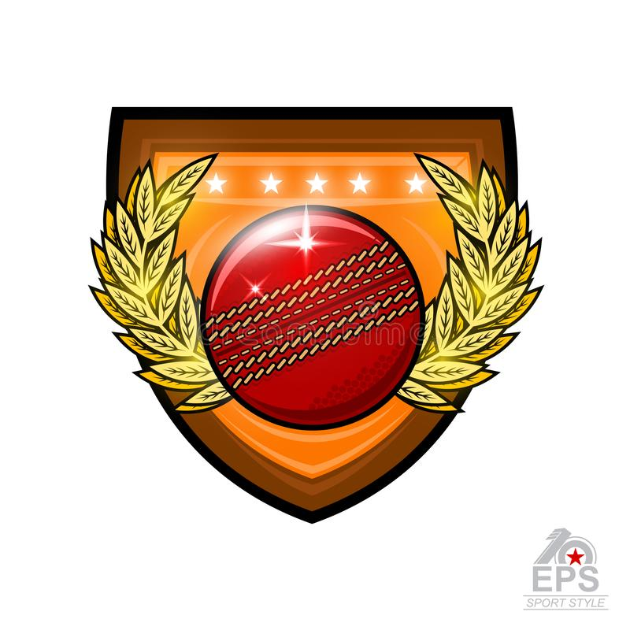
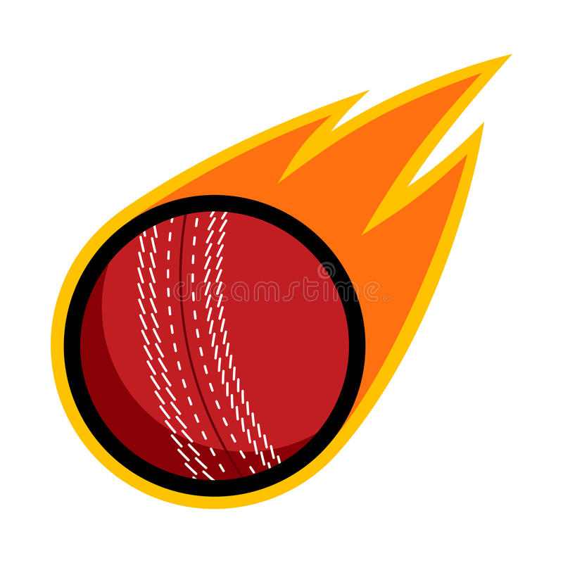

{{ teamWonToss }} :
{{ scoreCard.totalRun }}/{{ scoreCard.totalWicket }}
{{
scoreCard.totalRun
}}
over: {{ calOverCount() }}
{{ getPlayerScore() }}
{{ displayBowler }} : {{ displayBowler }}
Extra runs: {{ scoreCard.extraRun }}
Run rate: {{ calRunRate() }}